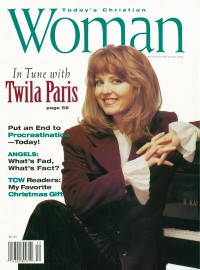
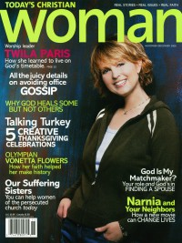

Twila Paris
 |
| January 1994 CCM |
 |
| November 1994 Today's Christian Woman |
 |
| November 2005 Today's Christian Woman |
Media coverage:
- Feb 1983 in CCM "Twila Paris"
- Sep 1984 in Christian Life "They Take Their Talent to College Campuses", by Karen Tornberg
- Dec 1984 in Christian Life "Missionary of Music", by Susan Coker
- Nov 1985 in CCM "News Beat: Missions And More", by Susan Coker
- Jun 1987 in CCM "Father Knows Best", by Thom Granger
- 1987 in Premier "Twila Paris"
- Feb 1988 in Charisma "Voice of Praise", by Steve Lawson
- 1988 in Premier "Twila Paris"
- Mar 1989 in Today's Christian Woman "Can A Successful Singer Be This Normal?", by Sharon Donohue
- Dec 1989 in CCM "Thoughts of Christmas", by Loralee Lindely
- Oct 1990 in CCM "Still Waiting", by Kathleen A Ervin
- Nov 1991 in CCM "The Sanctuaries of Twila Paris", by Ana Gascón Ivey
- Nov 1992 in Today's Christian Woman "My Most Memorable Christmas", by Holly G. Miller
- Jan 1993 in CCM "A Soul Restored", by Thom Granger
- Jan 1993 in The Lighthouse "Comments on A Heart That Knows You and "Destiny"", by Twila Paris
- Jul 1993 in CCM
- Sep 1993 in Today's Christian Woman
- Oct 1993 in CCM "In Concert: Great Auditorium: Ocean Grove, NJ", by Robert Mineo
- Nov 1993 in Charisma "Mike Warnke, Phil Driscoll, Twila Paris, Steve Green, Shirley Caesar, Craig Smith", by Marsha Gallardo
- Jan 1994 in CCM "Coming Back To Life", by Deborah Evans Price
- Nov 1994 in Today's Christian Woman "Home For The Holidays", by Ramona Cramer Tucker
- Mar 1995 in CCM "In The News: Paris Records Song For Billy Graham's Global Mission"
- Apr 1995 in CCM "In The News: Chapman, Paris, Taylor Top Dove Nominee List"
- May 1995 in Charisma "Sight & Sound: Music From A Mother's Heart", by Rhonda Miskowski
- Jun 1995 in CCM "In Concert: Elmbrook Church, Brookfield, WI", by Jamie Lee Rake
- Jun 1996 in CCM "Paris In June", by Doug Trouten
- Sep 1997 in Church Musician Today "A Glimpse Into the Heart of Twila Paris", by Anita Wagoner
- Feb 1998 in Aspire "From Singer To Messenger", by Holly Halverson
- Mar 1998 in CCM "O For A Thousand Tongues!"
- Sep 1999 in CCM "Southern Girl, Northern Light", by Liz Kelly
- Oct 1999 in Profile "Pointing The Way", by Jay Winchester
- Jun 2000 in CCM "Global Impact"
- May 2001 in CCM "Paths Less Traveled By", by Lis Trouten
- Sep 2001 in CCM "Music That Matters: Twila Paris", by Lynette Kittle
- Oct 2001 in CCM "Story Behind the Song: The Warrior Is a Child", by Christina Farris
- May 2002 in Today's Christian Woman "God Is A Constant", by Ginger Kolbaba
- May 2003 in Christian Music Planet "Christian Music Moms", by Jenni Isaac
- Nov 2005 in Today's Christian Woman "The Time of Her Life"
- Aug 2006 in CCM "Lead Me On", by Kristi Henson
- Jul 2012 in CCM Digital "Roots: The artists that shaped the industry prove a classic never dies", by Caroline Lusk
Albums & reviews:
1980: Knowing You're Around
1996: The Early Years
1996: Where I Stand
1999: True North
2001: Bedtime Prayers, Lullabies, and Peaceful Worship
2008: Small Sacrifice
- Jun 1981 in Christian Herald, by Ron R. Lee
- Oct 1981 in CCM, by Marie Ameda
- Nov 1982 in CCM, by Paul Baker
- Sep 1983 in Christian Herald, by Ron R. Lee
- Jul 1984 in Charisma, by Richard Nakamoto
- Nov 1985 in Charisma, by Steve Lawson
- Dec 1985 in MusicLine, by Thom Granger
- Dec 1985 in CCM, by Bob Darden
- May 1986 in Christian Herald, by Peter Gross
- Jul 1987 in Charisma, by Steve Lawson
- Jul 1987 in CCM, by Bruce A. Brown
- Nov 1987 in Christian Herald, by Peter Gross
- Dec 1987 in Campus Life, by Jim Long
- Nov 1988 in CCM, by Warren Anderson
- Mar 1989 in Charisma, by Steve Lawson
- Jun 1989 in Christian Herald, by Peter Gross
- Nov 1989 in Today's Christian Woman, by Louise A. Ferrebee
- Nov 1989 in Christian Herald, by Peter Gross
- Dec 1989 in Campus Life, by Willard Alpine Smarsnick
- Dec 1989 in Charisma, by Steve Lawson
- Dec 1989 in CCM, by Stephanie Bennett
- Win 1989 in Harvest Rock Syndicate, by Brian Quincy Newcomb
- Aug 1990 in CCM, by Kathleen A Ervin
- Sep 1990 in Today's Christian Woman
- Sep 1990 in Christian Herald, by Peter Gross
- Fall 1990 in YouthWorker, by Steve Rabey
- Oct 1990 in Charisma, by David Carew
- Nov 1990 in Campus Life
- Nov 1991 in CCM, by Bernie Sheahan
- Jan 1992 in Today's Christian Woman
- Jan 1992 in Religious Broadcasting, by Darlene A Peterson
- Jan 1992 in Christian Herald, by Peter Gross
- Jan 1992 in Moody, by Donna L. Hankins
- Mar 1993 in Religious Broadcasting, by Darlene A Peterson
- Mar 1993 in Today's Christian Woman
- May 1992 in CCM, by Ana Gascón Ivey
- Jan 1994 in CCM, by Thom Granger
- Feb 1994 in The Lighthouse, by Ann Hathcock
- Mar 1994 in Today's Christian Woman
- Mar 1994 in Charisma, by Andy Ivey
- May 1994 in Moody, by Donna L. Hankins
- Fall 1994 in YouthWorker, by Steve Rabey
1996: The Early Years
1996: Where I Stand
- Apr 1996 in Charisma, by Mark A Smeby
- May 1996 in Aspire
- May 1996 in Today's Christian Woman
- May 1996 in CCM, by Bruce A. Brown
- Jul 1996 in Moody, by Anita Lustrea
- Sep 1996 in Campus Life
- Apr 1998 in CCM, by Phil Christensen
- May 1998 in YouthWorker, by Eric Gumm
- May 1998 in New Man
- May 1998 in Today's Christian Woman
- May 1998 in Charisma, by Bruce A. Brown
- May 1998 in Worship Leader, by Doug Hanks
1999: True North
- Sep 1999 in YouthWorker, by Dave Urbanski
- Oct 1999 in CCM, by Anthony DeBarros
- Jan 2000 in Moody, by Robert Lustrea
2001: Bedtime Prayers, Lullabies, and Peaceful Worship
- Jun 2001 in CCM, by Michele Howe
- Jul 2001 in Today's Christian Woman
- Jan 2002 in Church Musician Today, by Shannon Dietor-Hartley
- Feb 2002 in Church Musician Today, by Shannon Dietor-Hartley
- Mar 2003 in Christian Music Planet, by Gina M. Henderson
- May 2003 in Today's Christian Woman, by Corrie Cutrer
- May 2003 in CCM, by Sydney Alexander
- Sep 2005 in Worship Leader
- Dec 2005 in CCM, by Teri K. Modisette
2008: Small Sacrifice
- May 2008 in Discipleship Journal, by Sue Kline
- May 2009 in Charisma, by Cameron Conant
- Jul 2009 in YouthWorker, by Andrew Greer
- Mar 2012 in CCM Digital, by Grace S. Aspinwall
Award Summary (Nominations / Wins)
Dove Awards- 1985 Dove Awards
- Song: "Warrior Is A Child"
- Female Vocalist
- Inspirational Album: The Warrior is a Child
- Female Vocalist
- Female Vocalist
- Contemporary Album: Same Girl
- Female Vocalist
- Contemporary Album: For Every Heart
- Female Vocalist
- Female Vocalist
- Contemporary Album: Cry for the Desert
- Song: "I See You Standing"
- Songwriter
- Female Vocalist
- Artist
- Praise & Worship Album: Sanctuary
- Song: "The Joy of the Lord"
- Songwriter
- Female Vocalist
- Inspirational Recorded Song: "Come, Worship the Lord"
- Songwriter
- Female Vocalist
- Song: "God Is In Control"
- Songwriter
- Female Vocalist
- Artist
- Contemporary Album: Beyond a Dream
- Contemporary Recorded Song: "God Is In Control"
- Inspirational Album: Perennial: Songs for the Seasons of Life
- Long Form Music Video: Perennial In Concert: A Season of Worship [video]
- Children's Music Album: Bedtime Prayers, Lullabies, and Peaceful Worship
- Praise & Worship Album: He Is Exalted: Live Worship
- Inspirational Recorded Song: "Days Of Elijah"
- 1994 Billboard Music Video Awards
- Best Clip, Contemporary Christian: "God Is In Control"
Books about Twila Paris
- "Thunderbolts and Lightning: The Writing of Music for God" in Soul2Soul (Christopher L Coppernoll, 1998)
- "The Calling" in Soul2Soul (Christopher L Coppernoll, 1998)
- "Twila Paris" in The Encyclopedia of Contemporary Christian Music (Mark Allan Powell, 2002)
- "Twila Paris" in The Billboard Guide to Contemporary Christian Music (Barry Alfonso, 2002)
Published articles:
© 2011 CMnexus. Last updated September 2019. Contact: editor -AT- cmnexus -DØT- org About